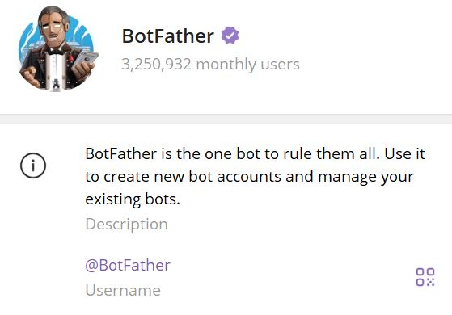
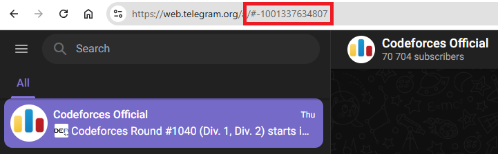
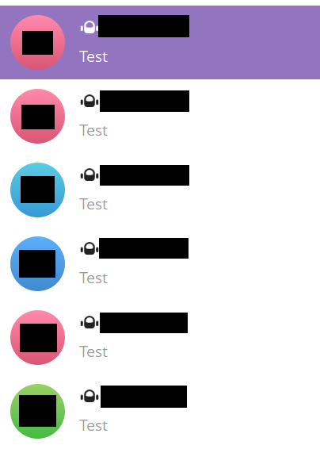

Telebot army is an absolute cinema
6 August 2025
Preface: 2022
It was the COVID era where everything was online, thus the rise of Telegram scammers trying to add random users to a particular set of scam and/or spam investment group chats. It was very disturbing for users who did not set up their privacy settings properly.
One of my friends was an unfortunate victim of the frequent spams. While I don’t get those invitations as often as him at that time, I was also looking for a funny way to deal with this. After all, one should live a little, right?
One night, I proposed to him if we can make use of Telegram bots (known as telebots), a topic that we were both learning on, to deal with the spammers. In summary, we make use of a telebot army and spam back the group we were invited to if there’s an access loophole. This doesn’t solve the problem as a whole, but it’ll be definitely a funny victory once it works. I think he liked the idea, so we continued working on this silly mini-project.
How it’s done
BotFather
First and foremost, you need to make the bots using BotFather on Telegram.

The steps of creating a single bot is rather simple:
- Type
/newbotto BotFather. - Choose a display name for the bot. This is not the Telegram bot handle, but rather what name do you want the bot to be displayed as.
- Next, the bot handle. You only need to ensure that this handle ends with the word
bot(case-insensitive), liketetrisBoTortetris_bot. You must ensure that this handle is unique: since the handles are case-insensitive,tetrisbotandtetrisBOTare the same handle. - Do
/setprivacyon the bot and set toDisableso it can send messages to the target chat. I personally think this is an optional step and only required if I can’t send the bot messages to the target chat.
If you want to save the time to come up with a unique bot handle, you can using the RNG script below.
from random import choice
from string import ascii_letters
print(''.join(choice(ascii_letters) for _ in range(20)) + '_bot')
The script generates a random 20-letter alphabetical string added with the _bot suffix.
Once the steps are complete, BotFather will give you an HTTP API token, which will be required for our next step. The token should look something like 0123456789:abcdefgh_ijklmno. As prompted, keep them secure and store it safely, so if you decide to publish your Python script, mask the tokens first.
Finally, we simply rinse and repeat until you’ve had sufficiently many bots to form your telebot army.
Python
Next, you need a Python script to execute the whole project. You only need these three modules, which you have to import on the very first line of your Python script.
import requests, time, threading
requests is used to make internet connection requests like API calls, and you need to install this package beforehand. time is built-in and will be used for time-related functions like sleeping or querying the current Unix timestamp. threading is used to run multiple processes from the same code in your device.
Now we need to find the target chat ID to put the telebot army into. To do this, you are required to access Telegram Web instead of Telegram Desktop (or the mobile app).

When you click on the target chat, the URL should change such that the chat ID is the suffix of the shown URL. While it’s not always the case, if the chat is a supergroup, the chat ID should start with -100, like the image above. Now store this actual chat ID into a variable called CHAT_ID.
Next, all the API tokens you’ve gotten from BotFather are to be stored as a list of strings called TOKENS. So, for now our Python script looks like this.
CHAT_ID = -10012345678
TOKENS = [
"0123456789:abcdefgh_ijklmno",
"0123456788:abcdefgh_ijklmnp",
"0123456787:abcdefgh_ijklmnq",
... # fill it yourself
]
We continue by constructing the message that we want to send via the telebots. We can define a get_message() function so we can either send a constant message or a random choice from a set of messages. Here is an example.
from random import choice
def get_message():
return choice(['Test', 'Wake up', '🥀'])
And then, the function to send the message itself, called send_message. I have made the function to be general enough so it takes in 3 parameters and an optional parameter:
- token: the bot token
- chat_id: the target chat ID
- message: the message to be sent
- (optional) verbose: whether to have a verbose logging from Telegram API or not, e.g. the reason why the message cannot be sent, or an acknowledgement that the message is successfully sent
The function makes use of the requests module and uses one of the API endpoints to send a message. The verbose logging will simply print the JSON response for readability. Note that since the parse_mode is currently set to Markdown, you can send messages that can be parsed in Markdown style, like bolds or italics. You can use other parse modes as well, but that’s up to you to explore.
def send_message(token, chat_id, message, verbose=False):
r = requests.get(f"https://api.telegram.org/bot{token}/sendMessage", params={
"chat_id": chat_id,
"parse_mode": "Markdown",
"text": message,
"disable_web_page_preview": True,
})
if verbose:
print(r.json())
Finally, the main function itself. We make use of the threading module that we have imported to parallelize the processes, and time to delay the process to avoid the rate limit. The duration of the delay is experimental, but I find $\frac{3}{n}$ seconds to be a good estimate. What this means is that the same bot is supposed to send another message after 3 seconds, so the number of messages sent by a particular bot in one minute isn’t too many, but the target gets a constant flow of messages within a much quicker rate. You can also think of this as a round-robin style of sending a message to the same target chat.
def main(target_chat):
while True:
threads = [threading.Thread(target=send_message, args=(token, target_chat, get_message())) for token in TOKENS]
for t in threads:
t.start()
time.sleep(3 / len(TOKENS))
for t in threads:
t.join()
main(CHAT_ID)
Aftermath
Combining everything explained above will yield a single Python script that you can just copy within a single click.
import requests, time, threading
CHAT_ID = -10012345678
TOKENS = [
"0123456789:abcdefgh_ijklmno",
"0123456788:abcdefgh_ijklmnp",
"0123456787:abcdefgh_ijklmnq",
... # fill it yourself
]
from random import choice
def get_message():
return choice(['Test', 'Wake up', '🥀'])
def send_message(token, chat_id, message, verbose=False):
r = requests.get(f"https://api.telegram.org/bot{token}/sendMessage", params={
"chat_id": chat_id,
"parse_mode": "Markdown",
"text": message,
"disable_web_page_preview": True,
})
if verbose:
print(r.json())
def main(target_chat):
while True:
threads = [threading.Thread(target=send_message, args=(token, target_chat, get_message())) for token in TOKENS]
for t in threads:
t.start()
time.sleep(3 / len(TOKENS))
for t in threads:
t.join()
main(CHAT_ID)
Note that you can further customize the script, like storing chat IDs as a list instead of a single chat ID, and many more. For now, I’ll keep the script as is for educational purposes.
Now that we’re all set, it’s time for action and pester back the spammers.

Epilogue: 2025
Now that these spam techniques are not so frequent anymore, I can still make use of the telebot army for other purposes. One I thought of recently was treating them as an alarm clock. Making use of the Telegram Desktop notification sound on my laptop, spamming myself with these bots should make sufficiently repetitive noises that would wake me up.
Guess what? It worked, at least for the whole week I was experimenting myself on. It’s silly, but it’s honest work.
What I changed from the previous Python code is simply adding the datetime module to indicate in how long do I want the alarm to start being triggered. We also have to modify the main part slightly as shown below.
import requests, time, threading, datetime
... # same as above
# additional code starts here
now = datetime.datetime.now()
while time.time() < (now + datetime.timedelta(hours=6, minutes=30)).timestamp():
time.sleep(10)
continue
# additional code ends here
main(CHAT_ID)
What the additional code above does is checking whether it’s been 6.5 hours after you start running the code, and only after that timestamp has been passed it will trigger the spamming. The time checking is done every 10 seconds by adding the delay time.sleep. How cool is that?
That’s all for now. What’s next, you might ask? Nothing I can think of yet, but silly things make you live a little, for sure! Truly an absolute cinema.